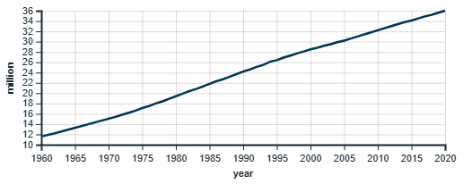

Definition
Morocco, officially the Kingdom of Morocco, is the westernmost country in the Maghreb region of North Africa. It overlooks the Mediterranean Sea to the north and the Atlantic Ocean to the west, and has land borders with Algeria to the east, Mauritania to the south. It spans an area of 710,850 km2, Its official and predominant religion is Islam, and the official languages are Arabic and Berber; the Moroccan dialect of Arabic and French are also widely spoken. Moroccan identity and culture is a mix of Arab, Berber, and European cultures. Its capital is Rabat, while its largest city is Casablanca. A large part of Morocco is mountainous. The Atlas Mountains are located mainly in the centre and the south of the country, the Rif Mountains are located in the north of the country, both ranges are mainly inhabited by the Berber people. Algeria borders Morocco to the east and southeast, though the border between the two countries has been closed since 1994. Morocco's modern official Arabic name al-Mamlakah al-Maghribiyyah (المملكة المغربية) may best be transliterated as 'The Kingdom of the Western Place'. Historically, the territory has been part of what the Muslim geographers referred to as al-Maghrib al-Aqsa (المغرب الأقصى, 'the Farthest West [of the Islamic world]' in contrast with neighbouring regions of al-Maghrib al-Awsaṭ (المغرب الأوسط, 'the Middle West':) and al-Maghrib al-Adná (المغرب الأدنى, 'the Nearest West':).
Population
The population of Morocco in 2021 is 37.271 million. Moroccans are primarily of Arab and Berber origin. Socially, there are two contrasting groups of Moroccans: those living in the cities and those in the rural areas. Among the rural, several classes have formed such as landowners, peasants, and tenant farmers. Moroccans live mainly in the north and west portions of Morocco. However, they prefer living in the more fertile regions near the Mediterranean Sea. About 99% of Moroccans are considered to be Sunni Muslims religiously or culturally. The numbers of the Jewish minority has decreased significantly since the creation of the State of Israel in 1948. Today there are 2,500 Moroccan Jews inside the country. Thousands of Moroccan Jews living in Europe, Israel and North America visit the country regularly. There is a small but apparently growing minority of Moroccan Christians made of local Moroccan converts (not Europeans). In 2014, most of the 86,206 foreign residents are French people, Spaniards, Algerians and sub-Saharan African students.
As we can see, Moroccain population have been increasing during the years:
History
Foundation and early Islamic era
The Muslim conquest of the Maghreb, which started in the middle of the 7th century, was achieved by the Umayyad Caliphate early into the following century. It brought both the Arabic language and Islam to the area. Although part of the larger Islamic Empire, Morocco was initially organized as a subsidiary province of Ifriqiya, with the local governors appointed by the Muslim governor in Kairouan. The indigenous Berber tribes adopted Islam, but retained their customary laws. They also paid taxes and tribute to the new Muslim administration. The first independent Muslim state in the area of modern Morocco was the Kingdom of Nekor, an emirate in the Rif Mountains. It was founded by Salih I ibn Mansur in 710, as a client state to the Umayyad Caliphate. After the outbreak of the Berber Revolt in 739, the Berbers formed other independent states such as the Miknasa of Sijilmasa and the Barghawata
Flag timeline of Morocco

What?
Morocco is a country.
Where?
It's in Africa.
When?
Since a very long time.